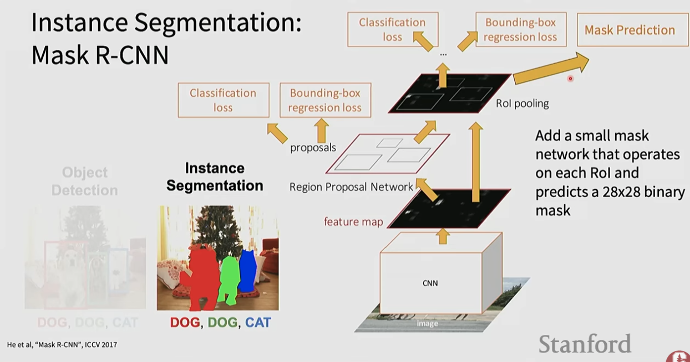

Labeling every pixel in an image with a class category — and going further with instance segmentation to distinguish individual objects of the same class. Both tasks require maintaining spatial resolution that standard CNNs progressively destroy.
Classic CNNs were designed for image classification ("is there a cat?"):
Rule of thumb: downsampling builds context; upsampling restores resolution.
The Segment Anything Model (SAM) style approach lets the model generate masks from sparse prompts instead of predicting a full semantic label map for every class:
Zigeng/SlimSAM-uniform-77The simplest approach — and computationally most expensive:
Process the entire image in a single forward pass and produce dense predictions efficiently:
To restore spatial resolution after downsampling:
Combines semantic + instance segmentation into one unified prediction:
U-Net is the state-of-the-art architecture for dense prediction, especially biomedical segmentation. Its key innovation: skip connections that directly connect corresponding encoder and decoder layers, so the decoder sees both high-level semantics AND fine spatial details.
Input → [Conv → Pool]* → bottleneck → [Upsample + Skip Concat → Conv]* → OutputPaper: U-Net: Convolutional Networks for Biomedical Image Segmentation
Semantic segmentation cannot distinguish between multiple instances of the same class. Instance segmentation assigns a unique mask to each individual object.
Mask R-CNN extends Faster R-CNN by adding a third head that predicts a 28×28 binary segmentation mask per region of interest (RoI):
Paper: Mask R-CNN
This is the clean conceptual bridge from object detection to instance segmentation: keep the detection pipeline, then add a small mask head that predicts a binary mask for each proposed object.

Intersection over Union (IoU):
IoU = (Predicted ∩ Ground Truth) / (Predicted ∪ Ground Truth)Mean IoU (mIoU): average IoU across all semantic classes — standard metric for segmentation.
def iou(boxA, boxB):
x_left = max(boxA[0], boxB[0])
y_top = max(boxA[1], boxB[1])
x_right = min(boxA[2], boxB[2])
y_bottom = min(boxA[3], boxB[3])
if x_right <= x_left or y_bottom <= y_top:
return 0.0
intersection = (x_right - x_left) * (y_bottom - y_top)
areaA = (boxA[2]-boxA[0]) * (boxA[3]-boxA[1])
areaB = (boxB[2]-boxB[0]) * (boxB[3]-boxB[1])
return intersection / (areaA + areaB - intersection)